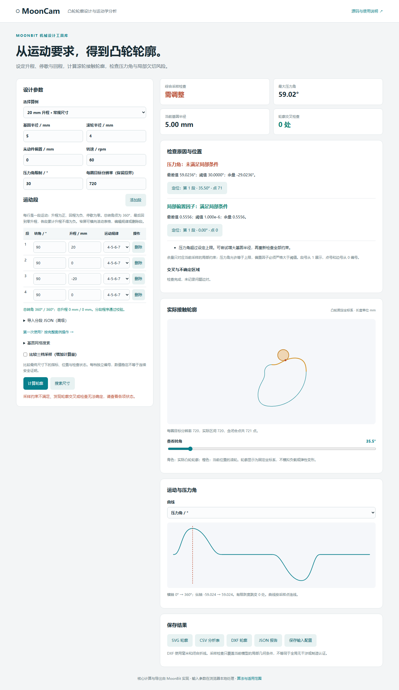
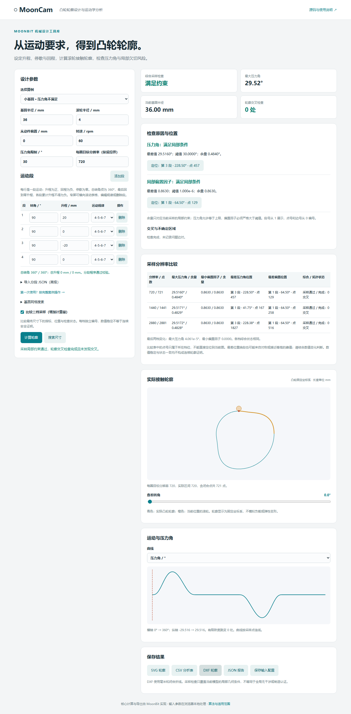

从超限方案到可导出轮廓
用一个 20 mm 升程案例，完成输入、定位、尺寸调整、采样复核和保存。可另开工作台，边看边操作。
1. 载入运动要求
选择“小基圆 · 压力角不满足”。四段转角均为 90°，升程依次为 20、0、−20、0 mm，规律均为 4-5-6-7。表格应显示总转角 360°、总升程 0 mm，校验通过。
每段规律可独立选择；添加、删除和编辑后，MoonBit 会校验闭合条件及累计升程。保持基圆 5 mm、滚轮 4 mm、偏置 0 mm、转速 60 rpm、压力角限制 30°、分辨率 720。
下载完整超限配置高级导入框只接受配置内的 segments 数组，保存输入配置则导出完整 JSON。
2. 计算并定位超限
点击“计算轮廓”，综合检查显示“需调整”。在“检查原因与位置”找到压力角超限，点击定位按钮：运动段、接触点、滑块和曲线游标应同步选中。本例首次最大值在约 35.5°、第 1 段；对称位置可能同样达到最大值。

压力角描述接触法线与从动件运动方向的夹角，此例以 30° 为限制。还需一起检查偏置因子、轮廓交叉和综合状态。
3. 搜索通过复核的基圆
展开“基圆网格搜索”，填写 5～100 mm、95 个区间，点击“搜索尺寸”。本例按 1 mm 间距得到 36 mm 候选，复核最大压力角约 29.52°。它是有限网格首个通过候选，不是连续最小尺寸。
搜索不会改写左侧参数。接下来单独分析时，请先把左侧基圆改为 36 mm，再计算。
下载搜索配置（粗分辨率 360，复核 720）4. 比较三档采样
将基圆设为 36 mm、分辨率设为 720，勾选“比较三档采样”，点击“计算轮廓”。查看 720、1440、2880 三档的压力角、偏置因子、最差位置和综合状态。
状态变化或余量很小需要进一步检查；相近极值可能使最差段号切换。每档独立编号，点号不能互相套用。数值稳定与状态一致都不是连续安全证明。

5. 保存输入与结果
点击“保存输入配置”，同时保存“JSON 报告”“CSV 分析表”及需要的 SVG 或 DXF。DXF 为毫米制闭合折线。修改参数后应重新计算，图表和下载对应上次提交时的参数。
保存的输入可交给 CLI 复算：node bin/mooncam.mjs mooncam-input.json --out artifacts/my-design。
拒绝轮廓也可导出用于诊断；导出成功不代表检查通过。本流程不包含商业 CAD 导入或加工验证。